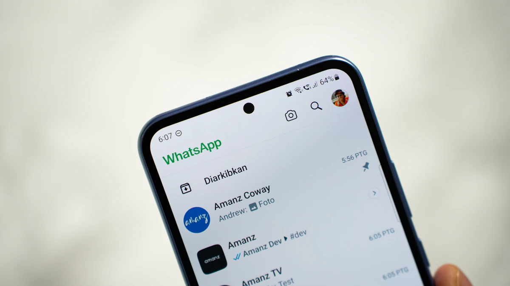

Why every Kenyan business needs a WhatsApp agent.
How a bilingual AI agent turns missed messages into booked, paying customers — around the clock.
Published 3 June 2026 · 5 min read · by Webtech Solutions KE

Quick experiment: open your business WhatsApp right now and count the messages you replied to more than an hour late. Each one of those was a customer holding money, asking you to take it. In Kenya, WhatsApp is the shopfront — it’s where people ask for prices, check if you deliver, negotiate, and place orders. And it’s where most businesses quietly leak sales every single day.
The maths of a missed message
A customer messaging you has usually messaged two or three of your competitors too. The first business to reply properly wins the deal more often than not — speed reads as reliability. If they ask “mko na delivery Karen?” at 9pm and you answer at 11am tomorrow, you didn’t reply late; you replied to someone who already bought elsewhere.
Hiring someone to sit on WhatsApp around the clock is expensive. Doing it yourself means your phone owns your evenings. This is exactly the gap an AI agent fills.
What a WhatsApp AI agent actually does
Forget clunky robots that reply “Press 1 for menu”. A modern AI agent holds a real conversation, trained on your business — your products, prices, delivery zones and policies. Practically, it:
- Answers instantly, 24/7 — at midnight, on Sunday, during the CHAN final. Every enquiry gets a useful reply in seconds.
- Answers the repetitive 80% — price lists, delivery areas, opening hours, “mnauza hii?” — so you only handle conversations that need a human.
- Qualifies leads — it asks what the customer needs, their budget and timeline, and hands you a tidy summary instead of a cold “Hi”.
- Books and sells — takes orders, books appointments, shares your M-Pesa details or payment link, and confirms.
- Knows when to hand over — a good agent escalates tricky or sensitive conversations to you, with full context, instead of bluffing.
English na Kiswahili, bila shida
Here’s where generic chatbots fall flat in Kenya: customers don’t write in one language. They write “niko interested na hii fridge, last price?” — English, Swahili and Sheng in a single sentence. A well-built agent for the Kenyan market handles that naturally and replies in the language the customer used. That’s not a nice-to-have; it’s the difference between a conversation and a confusion.
Who is this actually for?
Any business where enquiries arrive on WhatsApp faster than you can answer them well:
- Shops and online stores — price checks, stock questions, order taking.
- Tour and safari operators — itinerary questions from different time zones, at all hours.
- Clinics, salons and spas — appointment booking and rescheduling.
- Real estate and rentals — “bado iko?” asked forty times a day.
- Restaurants and caterers — menus, delivery zones, event quotes.
“Won’t customers hate talking to AI?”
Customers hate waiting. What they want at the enquiry stage is a fast, accurate, polite answer — and an instant correct reply at 10pm beats “typing…” at noon the next day. The agents we build introduce themselves honestly, never pretend to be a person, and hand over to you the moment a human touch is needed. The AI handles the queue; you handle the relationship.
Curious how this differs from the free WhatsApp Business app you may already use? We broke that down here: WhatsApp Business vs an AI agent — what’s the difference?
Getting started
This is our flagship service, and we build every agent around your actual business — your tone, your catalogue, your rules. Have a look at Webtech AI agents, or request a free quote and we’ll show you what an agent trained on your business would look like. You can even test-drive one first: the chat assistant on our contact page is exactly this technology.
Related reading
Stop losing sales to slow replies.
Tell us about your business — we’ll show you what a WhatsApp AI agent trained on it would look like, free.